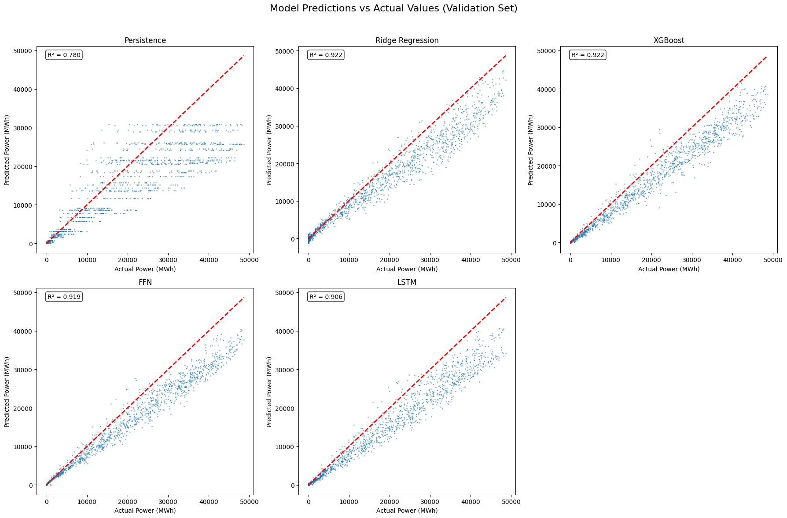
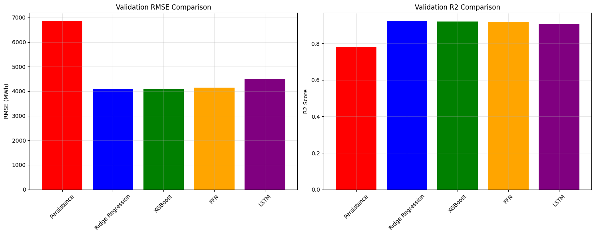
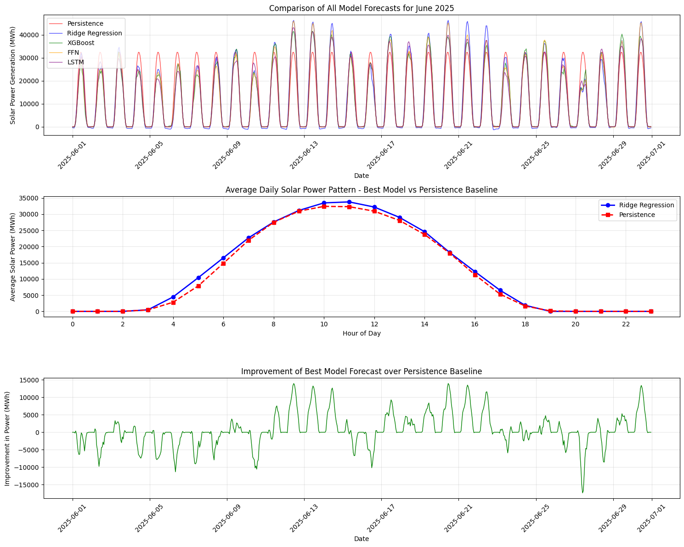

import pandas as pd
import numpy as np
import matplotlib.pyplot as plt
import seaborn as sns
from sklearn.preprocessing import StandardScaler
from sklearn.linear_model import Ridge
from sklearn.model_selection import GridSearchCV, TimeSeriesSplit
from sklearn.metrics import mean_squared_error, mean_absolute_error, r2_score
import xgboost as xgb
import torch
import torch.nn as nn
from torch.utils.data import TensorDataset, DataLoader
import warnings
warnings.filterwarnings("ignore")
# Set random seeds for reproducibility
np.random.seed(42)
torch.manual_seed(42)
plt.style.use('default')Solar Power Forecasting Analysis (Q1)
Introduction
-Based on the case study requirements, we need to use solar power observations from 2022-01-01 to 2025-05-31 to predict the month of June 2025.
We compare five different models:
- Persistence Model - Simple baseline using historical patterns
- Ridge Regression - Linear model with L2 regularization and hyperparameter tuning
- XGBoost - Gradient boosting with comprehensive hyperparameter search
- Feedforward Neural Network - Deep learning without sequence modeling
- LSTM - Recurrent neural network for sequence modeling
Data Loading and Preparation
EDA Summary Integration
From the EDA analysis, we identified:
- Strongest predictors:
surface_solar_radiation_downwardsandtemperature_2mshow high correlation with solar power generation - Seasonality: Clear daily and annual cycles in both solar power and solar radiation
- Feature selection: Focus on most correlated meteorological variables plus engineered time features, including interaction terms
The train/validation split will use March 1st as boundary
# Load solar power observations (2022-01-01 to 2025-05-31)
solar_q1 = pd.read_csv("../data/germany_solar_observation_q1.csv", parse_dates=['DateTime'])
print(f"Solar data shape: {solar_q1.shape}")
print(f"Solar data range: {solar_q1['DateTime'].min()} to {solar_q1['DateTime'].max()}")
# Load meteorological features (2022-01-01 to 2025-06-30)
atm_q1 = pd.read_csv("../data/germany_atm_features_q1.csv", parse_dates=['DateTime'])
print(f"Atmospheric data shape: {atm_q1.shape}")
print(f"Atmospheric data range: {atm_q1['DateTime'].min()} to {atm_q1['DateTime'].max()}")
# Merge for training/validation (only where both power and features exist)
data_q1 = pd.merge(solar_q1, atm_q1, on="DateTime", how="inner")
data_q1 = data_q1[data_q1['DateTime'] <= '2025-05-31']
print(f"Training data shape: {data_q1.shape}")
print(f"Training data range: {data_q1['DateTime'].min()} to {data_q1['DateTime'].max()}")
# For June 2025 forecast: only meteorological features (no observed power)
forecast_data = atm_q1[(atm_q1['DateTime'] >= '2025-06-01') &
(atm_q1['DateTime'] <= '2025-06-30 23:00:00')].copy()
print(f"Forecast data shape: {forecast_data.shape}")
print(f"Forecast data range: {forecast_data['DateTime'].min()} to {forecast_data['DateTime'].max()}")Solar data shape: (29928, 2)
Solar data range: 2022-01-01 00:00:00+00:00 to 2025-05-31 23:00:00+00:00
Atmospheric data shape: (30648, 11)
Atmospheric data range: 2022-01-01 00:00:00+00:00 to 2025-06-30 23:00:00+00:00
Training data shape: (29905, 12)
Training data range: 2022-01-01 00:00:00+00:00 to 2025-05-31 00:00:00+00:00
Forecast data shape: (720, 11)
Forecast data range: 2025-06-01 00:00:00+00:00 to 2025-06-30 23:00:00+00:00Comprehensive Feature Engineering
def add_comprehensive_features(df):
"""Add comprehensive features including cyclical time features and interactions"""
df = df.copy()
# Basic time features
df['hour'] = df['DateTime'].dt.hour
df['dayofyear'] = df['DateTime'].dt.dayofyear
df['month'] = df['DateTime'].dt.month
df['dayofweek'] = df['DateTime'].dt.dayofweek
df['is_weekend'] = (df['DateTime'].dt.dayofweek >= 5).astype(int)
# Cyclical encoding for time features
df['hour_sin'] = np.sin(2 * np.pi * df['hour'] / 24)
df['hour_cos'] = np.cos(2 * np.pi * df['hour'] / 24)
df['dayofyear_sin'] = np.sin(2 * np.pi * df['dayofyear'] / 365)
df['dayofyear_cos'] = np.cos(2 * np.pi * df['dayofyear'] / 365)
df['month_sin'] = np.sin(2 * np.pi * df['month'] / 12)
df['month_cos'] = np.cos(2 * np.pi * df['month'] / 12)
# Solar-specific features
df['is_daylight'] = ((df['hour'] >= 6) & (df['hour'] <= 18)).astype(int)
df['is_peak_solar'] = ((df['hour'] >= 10) & (df['hour'] <= 14)).astype(int)
# Interaction features
df['temp_radiation_interaction'] = df['temperature_2m'] * df['surface_solar_radiation_downwards']
df['cloud_radiation_interaction'] = df['total_cloud_cover'] * df['surface_solar_radiation_downwards']
df['humidity_temp_interaction'] = df['relative_humidity_2m'] * df['temperature_2m']
return df
# Apply comprehensive feature engineering
data_q1 = add_comprehensive_features(data_q1)
forecast_data = add_comprehensive_features(forecast_data)
# Define comprehensive feature set
features = [
'surface_solar_radiation_downwards', 'temperature_2m', 'total_cloud_cover',
'total_precipitation', 'snowfall', 'snow_depth', 'wind_speed_10m', 'wind_speed_100m',
'apparent_temperature', 'relative_humidity_2m', 'hour_sin', 'hour_cos', 'dayofyear_sin',
'dayofyear_cos', 'month_sin', 'month_cos', 'is_weekend', 'is_daylight', 'is_peak_solar',
'temp_radiation_interaction', 'cloud_radiation_interaction', 'humidity_temp_interaction'
]
target = 'power'
print(f"Selected features ({len(features)}): {features}")Selected features (22): ['surface_solar_radiation_downwards', 'temperature_2m', 'total_cloud_cover', 'total_precipitation', 'snowfall', 'snow_depth', 'wind_speed_10m', 'wind_speed_100m', 'apparent_temperature', 'relative_humidity_2m', 'hour_sin', 'hour_cos', 'dayofyear_sin', 'dayofyear_cos', 'month_sin', 'month_cos', 'is_weekend', 'is_daylight', 'is_peak_solar', 'temp_radiation_interaction', 'cloud_radiation_interaction', 'humidity_temp_interaction']Data Split
# The train/validation split using March 1st as boundary
# This provides more validation data and better temporal representation
train_data = data_q1[data_q1['DateTime'] < '2025-03-01'].copy()
val_data = data_q1[data_q1['DateTime'] >= '2025-03-01'].copy()
print(f"Train set: {len(train_data)} samples ({train_data['DateTime'].min()} to {train_data['DateTime'].max()})")
print(f"Validation set: {len(val_data)} samples ({val_data['DateTime'].min()} to {val_data['DateTime'].max()})")
print(f"Forecast set: {len(forecast_data)} samples")
# Prepare feature matrices
X_train = train_data[features].values
X_val = val_data[features].values
X_forecast = forecast_data[features].values
y_train = train_data[target].values
y_val = val_data[target].values
# Scale features
scaler = StandardScaler()
X_train_scaled = scaler.fit_transform(X_train)
X_val_scaled = scaler.transform(X_val)
X_forecast_scaled = scaler.transform(X_forecast)
print(f"Feature shapes - Train: {X_train_scaled.shape}, Val: {X_val_scaled.shape}, Forecast: {X_forecast_scaled.shape}")Train set: 27720 samples (2022-01-01 00:00:00+00:00 to 2025-02-28 23:00:00+00:00)
Validation set: 2185 samples (2025-03-01 00:00:00+00:00 to 2025-05-31 00:00:00+00:00)
Forecast set: 720 samples
Feature shapes - Train: (27720, 22), Val: (2185, 22), Forecast: (720, 22)Model 1: Persistence Model
class PersistenceModel:
"""
Persistence model with seasonal patterns and weighted averaging
"""
def __init__(self, strategy='seasonal_hourly_weighted'):
self.strategy = strategy
self.historical_patterns = {}
def fit(self, data):
"""Fit the persistence model using training data"""
data = data.copy()
data['hour'] = data['DateTime'].dt.hour
data['month'] = data['DateTime'].dt.month
if self.strategy == 'seasonal_hourly_weighted':
# Create patterns with exponential weighting (more recent = higher weight)
patterns = {}
for month in range(1, 13):
for hour in range(24):
subset = data[(data['month'] == month) & (data['hour'] == hour)]['power']
if len(subset) > 0:
# Exponential weighting favoring recent observations
weights = np.exp(np.linspace(-1, 0, len(subset)))
weighted_avg = np.average(subset, weights=weights)
patterns[(month, hour)] = weighted_avg
else:
patterns[(month, hour)] = 0
self.historical_patterns = patterns
def predict(self, forecast_dates):
"""Generate predictions for forecast dates"""
predictions = []
for date in forecast_dates:
hour = date.hour
month = date.month
pred = self.historical_patterns.get((month, hour), 0)
predictions.append(max(0, pred)) # Ensure non-negative
return np.array(predictions)
# Fit and evaluate persistence model
print("=== Persistence Model ===")
persistence_model = PersistenceModel()
persistence_model.fit(train_data)
y_val_pred_persistence = persistence_model.predict(val_data['DateTime'])
val_rmse_persistence = np.sqrt(mean_squared_error(y_val, y_val_pred_persistence))
val_mae_persistence = mean_absolute_error(y_val, y_val_pred_persistence)
val_r2_persistence = r2_score(y_val, y_val_pred_persistence)
print(f"Validation RMSE: {val_rmse_persistence:.2f}")
print(f"Validation MAE: {val_mae_persistence:.2f}")
print(f"Validation R2: {val_r2_persistence:.4f}")
# Generate forecast
forecast_persistence = persistence_model.predict(forecast_data['DateTime'])=== Persistence Model ===
Validation RMSE: 6846.50
Validation MAE: 3794.41
Validation R2: 0.7800Model 2: Ridge Regression with Hyperparameter Tuning
print("=== Ridge Regression with Hyperparameter Tuning ===")
# Hyperparameter tuning with time series cross-validation
param_grid = {'alpha': [0.1, 1.0, 10.0, 100.0, 1000.0]}
tscv = TimeSeriesSplit(n_splits=5)
ridge_model = GridSearchCV(
Ridge(random_state=42),
param_grid,
cv=tscv,
scoring='neg_mean_squared_error',
n_jobs=-1
)
ridge_model.fit(X_train_scaled, y_train)
# Validation predictions
y_val_pred_lr = ridge_model.predict(X_val_scaled)
val_rmse_lr = np.sqrt(mean_squared_error(y_val, y_val_pred_lr))
val_mae_lr = mean_absolute_error(y_val, y_val_pred_lr)
val_r2_lr = r2_score(y_val, y_val_pred_lr)
print(f"Best alpha: {ridge_model.best_params_['alpha']}")
print(f"Validation RMSE: {val_rmse_lr:.2f}")
print(f"Validation MAE: {val_mae_lr:.2f}")
print(f"Validation R2: {val_r2_lr:.4f}")
# Feature importance analysis
feature_importance_lr = pd.DataFrame({
'feature': features,
'coefficient': ridge_model.best_estimator_.coef_
}).sort_values('coefficient', key=abs, ascending=False)
print(f"\nTop 10 most important features:")
print(feature_importance_lr.head(10))
# Generate forecast
forecast_lr = ridge_model.predict(X_forecast_scaled)=== Ridge Regression with Hyperparameter Tuning ===
Best alpha: 1.0
Validation RMSE: 4074.83
Validation MAE: 2460.09
Validation R2: 0.9221
Top 10 most important features:
feature coefficient
0 surface_solar_radiation_downwards 9699.378515
1 temperature_2m -3018.023171
21 humidity_temp_interaction 1915.841509
8 apparent_temperature 1068.323690
13 dayofyear_cos 906.292392
9 relative_humidity_2m -860.582153
7 wind_speed_100m -754.387090
6 wind_speed_10m 593.009324
19 temp_radiation_interaction 581.332126
20 cloud_radiation_interaction -544.207000Model 3: XGBoost
print("=== XGBoost with Grid Search ===")
# Comprehensive hyperparameter grid
xgb_param_grid = {
'n_estimators': [200, 300],
'max_depth': [6, 8],
'learning_rate': [0.1, 0.15],
'subsample': [0.8],
'colsample_bytree': [0.8]
}
xgb_model = GridSearchCV(
xgb.XGBRegressor(random_state=42, n_jobs=-1),
xgb_param_grid,
cv=tscv,
scoring='neg_mean_squared_error',
n_jobs=-1
)
xgb_model.fit(X_train_scaled, y_train)
# Validation predictions
y_val_pred_xgb = xgb_model.predict(X_val_scaled)
val_rmse_xgb = np.sqrt(mean_squared_error(y_val, y_val_pred_xgb))
val_mae_xgb = mean_absolute_error(y_val, y_val_pred_xgb)
val_r2_xgb = r2_score(y_val, y_val_pred_xgb)
print(f"Best parameters: {xgb_model.best_params_}")
print(f"Validation RMSE: {val_rmse_xgb:.2f}")
print(f"Validation MAE: {val_mae_xgb:.2f}")
print(f"Validation R2: {val_r2_xgb:.4f}")
# Feature importance
feature_importance_xgb = pd.DataFrame({
'feature': features,
'importance': xgb_model.best_estimator_.feature_importances_
}).sort_values('importance', ascending=False)
print(f"\nTop 10 most important features:")
print(feature_importance_xgb.head(10))
# Generate forecast
forecast_xgb = xgb_model.predict(X_forecast_scaled)=== XGBoost with Grid Search ===
Best parameters: {'colsample_bytree': 0.8, 'learning_rate': 0.1, 'max_depth': 6, 'n_estimators': 300, 'subsample': 0.8}
Validation RMSE: 4079.03
Validation MAE: 2410.77
Validation R2: 0.9219
Top 10 most important features:
feature importance
19 temp_radiation_interaction 0.524532
0 surface_solar_radiation_downwards 0.310214
20 cloud_radiation_interaction 0.038745
10 hour_sin 0.023511
11 hour_cos 0.020148
8 apparent_temperature 0.014766
2 total_cloud_cover 0.009859
5 snow_depth 0.008512
3 total_precipitation 0.007862
15 month_cos 0.007454Model 4: Feedforward Neural Network
class FFN(nn.Module):
"""Feedforward neural network"""
def __init__(self, input_dim, hidden_dims=[256, 128, 64], dropout_rate=0.3):
super().__init__()
layers = []
prev_dim = input_dim
for hidden_dim in hidden_dims:
layers.extend([
nn.Linear(prev_dim, hidden_dim),
nn.BatchNorm1d(hidden_dim),
nn.ReLU(),
nn.Dropout(dropout_rate)
])
prev_dim = hidden_dim
# Output layer
layers.append(nn.Linear(prev_dim, 1))
self.network = nn.Sequential(*layers)
def forward(self, x):
return self.network(x).squeeze()
def train_pytorch_model(model, train_loader, val_loader, epochs=100, lr=1e-3, patience=15):
"""Training with early stopping and learning rate scheduling"""
optimizer = torch.optim.AdamW(model.parameters(), lr=lr, weight_decay=1e-5)
scheduler = torch.optim.lr_scheduler.ReduceLROnPlateau(optimizer, patience=5, factor=0.5)
criterion = nn.MSELoss()
best_val_loss = float('inf')
patience_counter = 0
train_losses = []
val_losses = []
for epoch in range(epochs):
# Training
model.train()
train_loss = 0
for batch_x, batch_y in train_loader:
optimizer.zero_grad()
pred = model(batch_x)
loss = criterion(pred, batch_y)
loss.backward()
torch.nn.utils.clip_grad_norm_(model.parameters(), max_norm=1.0)
optimizer.step()
train_loss += loss.item()
train_loss /= len(train_loader)
train_losses.append(train_loss)
# Validation
model.eval()
val_loss = 0
with torch.no_grad():
for batch_x, batch_y in val_loader:
pred = model(batch_x)
loss = criterion(pred, batch_y)
val_loss += loss.item()
val_loss /= len(val_loader)
val_losses.append(val_loss)
scheduler.step(val_loss)
# Early stopping
if val_loss < best_val_loss:
best_val_loss = val_loss
patience_counter = 0
# Save best model state
best_model_state = model.state_dict().copy()
else:
patience_counter += 1
if patience_counter >= patience:
print(f"Early stopping at epoch {epoch}")
# Load best model state
model.load_state_dict(best_model_state)
break
if epoch % 20 == 0:
current_lr = optimizer.param_groups[0]['lr']
print(f"Epoch {epoch}: Train Loss = {train_loss:.4f}, Val Loss = {val_loss:.4f}, LR = {current_lr:.6f}")
return model, train_losses, val_losses
def get_predictions(model, data_loader):
"""Get predictions from trained model"""
model.eval()
predictions = []
with torch.no_grad():
for batch_x, _ in data_loader:
pred = model(batch_x)
predictions.extend(pred.cpu().numpy())
return np.array(predictions)
print("=== Feedforward Neural Network ===")
# Prepare PyTorch datasets and loaders
train_ds_ffn = TensorDataset(
torch.tensor(X_train_scaled, dtype=torch.float32),
torch.tensor(y_train, dtype=torch.float32)
)
val_ds_ffn = TensorDataset(
torch.tensor(X_val_scaled, dtype=torch.float32),
torch.tensor(y_val, dtype=torch.float32)
)
forecast_ds_ffn = TensorDataset(
torch.tensor(X_forecast_scaled, dtype=torch.float32),
torch.zeros(len(X_forecast_scaled), dtype=torch.float32)
)
train_loader_ffn = DataLoader(train_ds_ffn, batch_size=128, shuffle=True)
val_loader_ffn = DataLoader(val_ds_ffn, batch_size=128)
forecast_loader_ffn = DataLoader(forecast_ds_ffn, batch_size=128)
# Initialize and train model
ffn_model = FFN(input_dim=len(features), hidden_dims=[256, 128, 64])
ffn_model, train_losses_ffn, val_losses_ffn = train_pytorch_model(
ffn_model, train_loader_ffn, val_loader_ffn, epochs=100, lr=1e-3
)
# Get validation predictions
y_val_pred_ffn = get_predictions(ffn_model, val_loader_ffn)
# Metrics
val_rmse_ffn = np.sqrt(mean_squared_error(y_val, y_val_pred_ffn))
val_mae_ffn = mean_absolute_error(y_val, y_val_pred_ffn)
val_r2_ffn = r2_score(y_val, y_val_pred_ffn)
print(f"Validation RMSE: {val_rmse_ffn:.2f}")
print(f"Validation MAE: {val_mae_ffn:.2f}")
print(f"Validation R2: {val_r2_ffn:.4f}")
# Generate forecast
forecast_ffn = get_predictions(ffn_model, forecast_loader_ffn)=== Feedforward Neural Network ===
Epoch 0: Train Loss = 143896508.0922, Val Loss = 332073007.7778, LR = 0.001000
Epoch 20: Train Loss = 106960176.2028, Val Loss = 259182275.1111, LR = 0.001000
Epoch 40: Train Loss = 40535532.8203, Val Loss = 126138233.3333, LR = 0.001000
Epoch 60: Train Loss = 7511131.6048, Val Loss = 33624885.2639, LR = 0.001000
Epoch 80: Train Loss = 4739726.2131, Val Loss = 18301381.4028, LR = 0.001000
Early stopping at epoch 94
Validation RMSE: 4148.52
Validation MAE: 2413.53
Validation R2: 0.9192Model 5: LSTM
class LSTM(nn.Module):
"""LSTM with better architecture and regularization"""
def __init__(self, input_dim, hidden_dim=128, num_layers=2, dropout_rate=0.3):
super().__init__()
self.lstm = nn.LSTM(
input_dim,
hidden_dim,
num_layers,
batch_first=True,
dropout=dropout_rate,
bidirectional=False
)
# output layers
self.fc_layers = nn.Sequential(
nn.Linear(hidden_dim, hidden_dim // 2),
nn.BatchNorm1d(hidden_dim // 2),
nn.ReLU(),
nn.Dropout(dropout_rate),
nn.Linear(hidden_dim // 2, 1)
)
def forward(self, x):
lstm_out, _ = self.lstm(x)
# Use the last time step output
last_output = lstm_out[:, -1, :]
return self.fc_layers(last_output).squeeze()
def create_sequences_corrected(X, y, seq_length):
"""Create sequences for LSTM training with proper handling"""
X_seq, y_seq = [], []
for i in range(seq_length, len(X)):
X_seq.append(X[i-seq_length:i])
y_seq.append(y[i])
return np.array(X_seq), np.array(y_seq)
def create_forecast_sequences(X_val, X_forecast, seq_length):
"""Create sequences for forecasting using validation data as initial context"""
X_forecast_seq = []
# Use the last seq_length samples from validation as initial context
context = X_val[-seq_length:]
for i in range(len(X_forecast)):
if i == 0:
# First prediction uses validation context
X_forecast_seq.append(context)
else:
# Subsequent predictions use rolling window
if i < seq_length:
# Mix validation context with forecast data
context_needed = seq_length - i
new_context = np.vstack([context[-context_needed:], X_forecast[:i]])
else:
# Use only forecast data
new_context = X_forecast[i-seq_length:i]
X_forecast_seq.append(new_context)
return np.array(X_forecast_seq)
print("=== LSTM Model ===")
# Create sequences for LSTM (24-hour lookback window)
seq_length = 24
X_train_seq, y_train_seq = create_sequences_corrected(X_train_scaled, y_train, seq_length)
X_val_seq, y_val_seq = create_sequences_corrected(X_val_scaled, y_val, seq_length)
X_forecast_seq = create_forecast_sequences(X_val_scaled, X_forecast_scaled, seq_length)
print(f"LSTM training sequences: {X_train_seq.shape}")
print(f"LSTM validation sequences: {X_val_seq.shape}")
print(f"LSTM forecast sequences: {X_forecast_seq.shape}")
# Prepare PyTorch datasets
train_ds_lstm = TensorDataset(
torch.tensor(X_train_seq, dtype=torch.float32),
torch.tensor(y_train_seq, dtype=torch.float32)
)
val_ds_lstm = TensorDataset(
torch.tensor(X_val_seq, dtype=torch.float32),
torch.tensor(y_val_seq, dtype=torch.float32)
)
forecast_ds_lstm = TensorDataset(
torch.tensor(X_forecast_seq, dtype=torch.float32),
torch.zeros(len(X_forecast_seq), dtype=torch.float32)
)
train_loader_lstm = DataLoader(train_ds_lstm, batch_size=64, shuffle=True)
val_loader_lstm = DataLoader(val_ds_lstm, batch_size=64)
forecast_loader_lstm = DataLoader(forecast_ds_lstm, batch_size=64)
# Initialize and train model
lstm_model = LSTM(input_dim=len(features), hidden_dim=128, num_layers=2)
lstm_model, train_losses_lstm, val_losses_lstm = train_pytorch_model(
lstm_model, train_loader_lstm, val_loader_lstm, epochs=100, lr=1e-3
)
# Get validation predictions
y_val_pred_lstm = get_predictions(lstm_model, val_loader_lstm)
# Metrics (note: LSTM validation has fewer samples due to sequence creation)
val_rmse_lstm = np.sqrt(mean_squared_error(y_val_seq, y_val_pred_lstm))
val_mae_lstm = mean_absolute_error(y_val_seq, y_val_pred_lstm)
val_r2_lstm = r2_score(y_val_seq, y_val_pred_lstm)
print(f"Validation RMSE: {val_rmse_lstm:.2f}")
print(f"Validation MAE: {val_mae_lstm:.2f}")
print(f"Validation R2: {val_r2_lstm:.4f}")
# Generate forecast
forecast_lstm = get_predictions(lstm_model, forecast_loader_lstm)=== LSTM Model ===
LSTM training sequences: (27696, 24, 22)
LSTM validation sequences: (2161, 24, 22)
LSTM forecast sequences: (720, 24, 22)
Epoch 0: Train Loss = 143719954.6790, Val Loss = 350893633.6471, LR = 0.001000
Epoch 20: Train Loss = 60073284.3926, Val Loss = 172966243.7647, LR = 0.001000
Epoch 40: Train Loss = 5218628.7022, Val Loss = 13436518.7941, LR = 0.001000
Epoch 60: Train Loss = 4423402.0856, Val Loss = 14035063.8768, LR = 0.000250
Early stopping at epoch 70
Validation RMSE: 4486.92
Validation MAE: 2648.39
Validation R2: 0.9061Model Comparison and Results
print("=== Model Comparison ===")
# Create comprehensive results dataframe
results_df = pd.DataFrame({
'Model': ['Persistence', 'Ridge Regression', 'XGBoost', 'FFN', 'LSTM'],
'Validation RMSE': [val_rmse_persistence, val_rmse_lr, val_rmse_xgb, val_rmse_ffn, val_rmse_lstm],
'Validation MAE': [val_mae_persistence, val_mae_lr, val_mae_xgb, val_mae_ffn, val_mae_lstm],
'Validation R2': [val_r2_persistence, val_r2_lr, val_r2_xgb, val_r2_ffn, val_r2_lstm]
})
print("\nModel Performance Comparison:")
print(results_df.round(4))
# Calculate improvement over persistence baseline
results_df['RMSE Improvement (%)'] = (val_rmse_persistence - results_df['Validation RMSE']) / val_rmse_persistence * 100
results_df['MAE Improvement (%)'] = (val_mae_persistence - results_df['Validation MAE']) / val_mae_persistence * 100
print("\nImprovement over Persistence Baseline:")
improvement_df = results_df[['Model', 'RMSE Improvement (%)', 'MAE Improvement (%)']].copy()
print(improvement_df.round(2))
# Identify best model
best_model_idx = results_df['Validation RMSE'].idxmin()
best_model_name = results_df.loc[best_model_idx, 'Model']
best_rmse = results_df.loc[best_model_idx, 'Validation RMSE']
print(f"\nBest Model: {best_model_name}")
print(f"Best RMSE: {best_rmse:.2f}")
print(f"Improvement over Persistence: {results_df.loc[best_model_idx, 'RMSE Improvement (%)']:.1f}%")
# Select best forecast
forecasts = {
'Persistence': forecast_persistence,
'Ridge Regression': forecast_lr,
'XGBoost': forecast_xgb,
'FFN': forecast_ffn,
'LSTM': forecast_lstm
}
best_forecast = forecasts[best_model_name]=== Model Comparison ===
Model Performance Comparison:
Model Validation RMSE Validation MAE Validation R2
0 Persistence 6846.5047 3794.4113 0.7800
1 Ridge Regression 4074.8302 2460.0932 0.9221
2 XGBoost 4079.0261 2410.7749 0.9219
3 FFN 4148.5198 2413.5346 0.9192
4 LSTM 4486.9157 2648.3932 0.9061
Improvement over Persistence Baseline:
Model RMSE Improvement (%) MAE Improvement (%)
0 Persistence 0.00 0.00
1 Ridge Regression 40.48 35.17
2 XGBoost 40.42 36.47
3 FFN 39.41 36.39
4 LSTM 34.46 30.20
Best Model: Ridge Regression
Best RMSE: 4074.83
Improvement over Persistence: 40.5%Visualization
# Create forecast dataframes needed for visualization
forecast_df = pd.DataFrame({
'DateTime': forecast_data['DateTime'].values,
'power': best_forecast
})
# Ensure no negative predictions
forecast_df['power'] = np.maximum(forecast_df['power'], 0)
persistence_forecast_df = pd.DataFrame({
'DateTime': forecast_data['DateTime'].values,
'power': forecast_persistence
})
import matplotlib.dates as mdates
# Plot validation predictions vs actual values
fig, axes = plt.subplots(2, 3, figsize=(18, 12))
fig.suptitle('Model Predictions vs Actual Values (Validation Set)', fontsize=16)
models_data = [
('Persistence', y_val_pred_persistence, y_val),
('Ridge Regression', y_val_pred_lr, y_val),
('XGBoost', y_val_pred_xgb, y_val),
('FFN', y_val_pred_ffn, y_val),
('LSTM', y_val_pred_lstm, y_val_seq) # LSTM has fewer validation samples
]
for idx, (name, pred, actual) in enumerate(models_data):
row = idx // 3
col = idx % 3
ax = axes[row, col]
ax.scatter(actual, pred, alpha=0.5, s=1)
ax.plot([actual.min(), actual.max()], [actual.min(), actual.max()], 'r--', lw=2)
ax.set_xlabel('Actual Power (MWh)')
ax.set_ylabel('Predicted Power (MWh)')
ax.set_title(f'{name}')
r2 = r2_score(actual, pred)
ax.text(0.05, 0.95, f'R² = {r2:.3f}', transform=ax.transAxes,
bbox=dict(boxstyle='round', facecolor='white', alpha=0.8))
# Remove empty subplot (bottom right)
axes[1, 2].remove()
plt.tight_layout(rect=[0, 0, 1, 0.96])
plt.show()
# Model performance comparison bar charts
fig, (ax1, ax2) = plt.subplots(1, 2, figsize=(15, 6))
# RMSE comparison
colors = ['red', 'blue', 'green', 'orange', 'purple']
ax1.bar(results_df['Model'], results_df['Validation RMSE'], color=colors)
ax1.set_title('Validation RMSE Comparison')
ax1.set_ylabel('RMSE (MWh)')
ax1.tick_params(axis='x', rotation=45)
ax1.grid(True, alpha=0.3)
# R2 comparison
ax2.bar(results_df['Model'], results_df['Validation R2'], color=colors)
ax2.set_title('Validation R2 Comparison')
ax2.set_ylabel('R2 Score')
ax2.tick_params(axis='x', rotation=45)
ax2.grid(True, alpha=0.3)
plt.tight_layout()
plt.show()
# Forecast visualization
plt.figure(figsize=(15, 12))
# 1. Plot all model forecasts for June 2025
plt.subplot(3, 1, 1)
for i, (model_name, forecast) in enumerate(forecasts.items()):
plt.plot(forecast_data['DateTime'], forecast, label=model_name, alpha=0.7, linewidth=1, color=colors[i])
plt.xlabel('Date')
plt.ylabel('Solar Power Generation (MWh)')
plt.title('Comparison of All Model Forecasts for June 2025')
plt.legend()
plt.xticks(rotation=45)
plt.grid(True, alpha=0.3)
# 2. Average daily solar power pattern - best model vs persistence
plt.subplot(3, 1, 2)
forecast_df['hour'] = forecast_df['DateTime'].dt.hour
persistence_forecast_df['hour'] = persistence_forecast_df['DateTime'].dt.hour
hourly_avg_best = forecast_df.groupby('hour')['power'].mean()
hourly_avg_persistence = persistence_forecast_df.groupby('hour')['power'].mean()
plt.plot(hourly_avg_best.index, hourly_avg_best.values,
marker='o', linewidth=2, label=f'{best_model_name}', color='blue')
plt.plot(hourly_avg_persistence.index, hourly_avg_persistence.values,
marker='s', linewidth=2, label='Persistence', color='red', linestyle='--')
plt.xlabel('Hour of Day')
plt.ylabel('Average Solar Power (MWh)')
plt.title('Average Daily Solar Power Pattern - Best Model vs Persistence Baseline')
plt.legend()
plt.grid(True, alpha=0.3)
plt.xticks(range(0, 24, 2))
# 3. Improvement over persistence baseline (forecast difference)
plt.subplot(3, 1, 3)
improvement = forecast_df['power'] - persistence_forecast_df['power']
plt.plot(forecast_df['DateTime'], improvement, color='green', linewidth=1)
plt.xlabel('Date')
plt.ylabel('Improvement in Power (MWh)')
plt.title('Improvement of Best Model Forecast over Persistence Baseline')
plt.grid(True, alpha=0.3)
plt.xticks(rotation=45)
plt.tight_layout()
plt.show()

